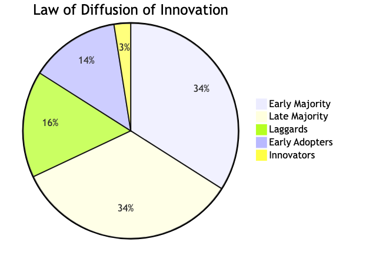

Diffusion of Innovations
The theory of Diffusion of Innovation is most commonly attributed to Everett Rogers, a sociologist who popularised it through his seminal 1962 book of the same name, though early ideas were explored by others like Edward T. Hall.
It's a mental model that explains how new ideas, products, or technologies spread through a social system.
The theory proposes that innovation diffusion follows a logical pattern, with the initial adoption of innovations being by a small percentage of the population (the innovators), followed by early adopters, early majority, late majority, and laggards.

Innovators: The first to adopt, risk-takers.
Early Adopters: Opinion leaders, quick to adopt after innovators.
Early Majority: Pragmatic adopters, wait for some acceptance.
Late Majority: Sceptical adopters, only adopt when commonplace.
Laggards: Traditionalists, resist change, last to adopt.